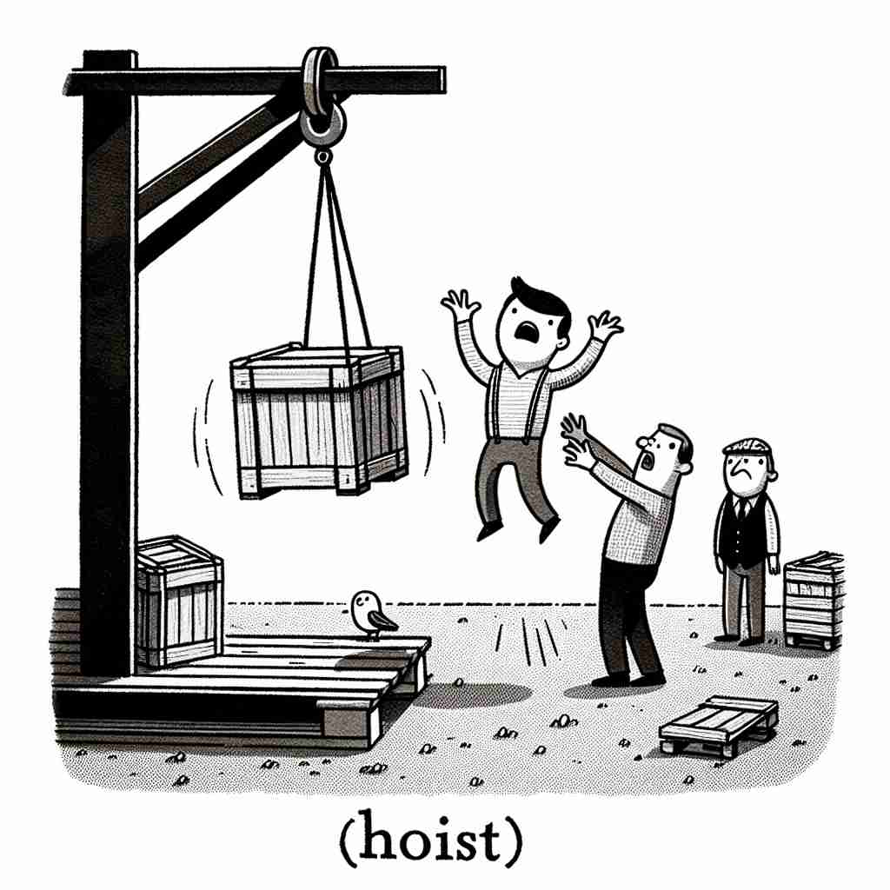

💬 The worker needs to hoist the box to the shelf. 工人需要把箱子吊到货架上。

💬 They need to hoist the crate to get it onto the truck. 他们需要将箱子吊起来，以便把它装上卡车。
💬 The worker needs to hoist the box to the shelf. 工人需要把箱子吊到货架上。
💬 They need to hoist the crate to get it onto the truck. 他们需要将箱子吊起来，以便把它装上卡车。
🧠 想象一个向上提升的动作，这就是'hoist'的核心含义。无论是具体物体、抽象概念，还是自身，都可以被"提升"。同时，这个词也可以指进行提升动作的设备或提升的行为本身。通过这个向上的动作，你可以轻松联想并记住'hoist'的各种用法。
🔈 [hɒɪst]
🗝️ v. to raise or lift something, especially by using ropes or a machine 提升或举起某物，特别是通过使用绳索或机器。
🎭 在一个建筑工地上，工人们正齐心协力地使用卷扬机将一块沉重的钢梁高高hoist起来。钢梁缓缓上升，直到被稳稳地安放到建筑结构中，这展示了'hoist'借助机器或绳索提升的含义。
💬 They hoisted the flag up the pole. 他们把旗帜升上了旗杆。
🌳 来自词根 "hoist" 本身，意为提升或升起，这个词没有明显的前缀或后缀修饰。
💡 可以通过联想 "hoist the flag" 来记住这个词，想象升旗的场景，记忆它与提升或升起的含义关系。
🗝️ v. to lift or raise oneself 抬起或提升自己
🎭 在一座攀岩墙前，一位运动员紧握岩石突出的地方，运用全身的力量将自己慢慢地hoist向上。他每次成功的攀爬都体现了'hoist'作为自我提升的含义。
💬 He hoisted himself onto the wall. 他爬上了墙。
🤔 将"提升"的动作应用于自身
🗝️ v. to raise or increase something 提升或增加某物
🎭 在一场商业会议中，负责人宣布公司将hoist员工的薪资，以鼓励士气并认可大家的努力。这一决定让与会者纷纷点头称赞，显示了'hoist'用来提升或增加某事物的意义。
💬 The company hoisted its prices by 10%. 公司将价格提高了10%。
🤔 将"提升"的概念扩展到抽象事物
🗝️ n. a device used for lifting heavy objects 一种用于提升重物的装置
🎭 在一个繁忙的货运港口，一台强大的hoist正用于将重型集装箱从船上搬运到码头。这一设备以其有效和安全闻名，展示了'hoist'作为用于提起重物的装置的功能。
💬 They used a hoist to lift the heavy machinery. 他们使用起重机来提升重型机械。
🤔 从动作衍生出执行该动作的工具
🗝️ n. an act of lifting or raising something 一个抬起或升起某物的行为
🎭 在一个传统的航海仪式上，水手们合力完成了船帆的hoist，随着帆徐徐升起，船也随之扬帆起航。这一集体协作的动作完美诠释了'hoist'作为提升行为的意义。
💬 With a strong hoist, he lifted the crate onto the truck. 他用力气将箱子吊起，放上了卡车。
🤔 动词转化为名词，表示提升的动作本身